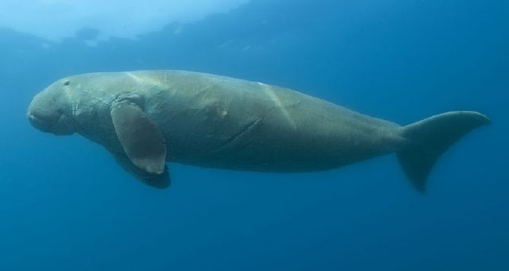

Manatee Habitats
Geographic Locations of All Manatee Species

Three species of manatees exist:
- Amazonian
- West African
- West Indian
- This species is separated into two subspecies because of the large body of water separating them from one another.
- Florida manatee
- Caribbean manatee (Antillean manatee on below map)
- This species is separated into two subspecies because of the large body of water separating them from one another.

There is also the Dugong, which is part of the same scientific order, but not actually a manatee.
Migration
Manatees live in shallow, calm rivers, estuaries, saltwater bays, canals, and coastal areas. Manatees move from fresh to salt water with no problem. In the United States, the Florida manatee inhabits the state’s coastal waters, rivers, and springs.
During the warmer months, some Florida manatees travel up the eastern coastline into Georgia and the Carolinas with a few animals traveling as far north as Massachusetts. In the Gulf, Florida manatees can be found west through coastal Louisiana and are occasionally sighted as far west as Texas.
In preparation for winter, manatees travel to migrate back to areas with warm water such as natural springs or power plant discharge canals. Florida is at the northern end of the sub-tropical manatee's winter range. These warm-water habitats play an important role in their survival during the winter months because Manatees can suffer from cold stress in water colder than 68 degrees F.
Threats and Conservation
The greatest source of manatee mortality worldwide is humans.
All three species of manatees have been listed as vulnerable by the International Union for Conservation of Nature (IUCN) since the 1980s. Though no longer classified as endangered in the United States, Florida manatees remain a threatened species and are vulnerable to habitat loss and boat collisions—a leading cause of manatee deaths in Florida.
Boat related manatee deaths are caused by cuts from propellers, impacts from the hull or lower unit of the motor, or a combination of the two.

Shockingly, about 96 percent of living manatees bear scars from boat injuries, and most have been hit multiple times.

Some studies estimate that 25–35 percent of all Florida manatee deaths come from collisions with watercraft.


Sometimes, Manatees are rescued and, hopefully, rehabilitated. This is an orphaned baby that required care for its survival.

Habitat loss is also an issue as coastal development and pollution can destroy seagrass beds and freshwater aquatic vegetation, which is the main food source of manatees.
Swimming with Manatees – No Touching!
Touching a manatee is illegal in the United States. They are safeguarded under the Marine Mammal Protection Act and the Endangered Species Act, which prohibit any act of harassment, hunting, capture, or killing of listed animals.
“Harassment” includes actions that disturb or alter natural behaviors, such as touching, which can disrupt feeding, mating, and migration patterns.
Florida is the only place in the world where you can legally swim with Manatees. BUT – there are important rules to follow in order to keep these marvelous animals safe from harassment. This is the safety video each person on a manatee tour is required to watch before being taken out on a boat. Unfortunately, this is not the true for privately owned water-craft.
Laws Protecting Manatees

The West Indian manatee is protected as a threatened species by the Federal Endangered Species Act, by the U.S. Marine Mammal Protection Act and the Florida Administrative Code - Florida Manatee Sanctuary Act (FMSA) (FAC 68C-22). The FMSA allows the State to set restrictions on boat speed and access in important manatee habitats. FWC enforces these boating restrictions along with Federal and local government partners.